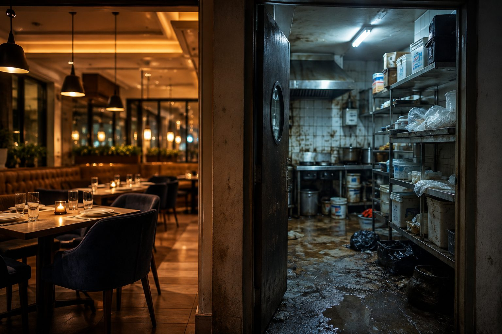

Behind the Kitchen Door

Over the past few weeks, I've come across several news reports about food safety inspections at popular restaurants across Hyderabad. Many of these restaurants are places people know well.
Beautiful ambience.
Pleasant lighting.
Great service.
The kind of places where you'd happily take your family for dinner.
But when the inspectors walked behind the kitchen door...
the picture was sometimes very different.
Poor hygiene.
Improper food storage.
Stale ingredients.
Pest infestations.
Places the customers never got to see. Reading those reports made me stop and think. Customers judged the restaurant by the dining area. The inspectors judged it by the kitchen. The restaurant owners probably didn't ignore those hidden areas because they wanted a dirty kitchen. They ignored them because they never expected anyone to look behind the door.
Looking into my own mirror...
I wonder if we quietly do the same. We spend so much time taking care of the parts of our lives that everyone else can see.
Our appearance.
Our reputation.
Our achievements.
Our words.
Our image.
But what about the parts nobody else has access to? The thoughts we entertain. The habits we've hidden. The conversations nobody hears. The compromises we've quietly accepted.
The places we've stopped cleaning...
simply because we assumed nobody would ever see behind the door.
Perhaps that's how it always begins.
Not with one big decision...
but with the quiet belief that hidden things don't really matter.
Until one day...
the hidden becomes visible.
A restaurant rarely loses its reputation because of what customers see in the dining area. It loses it when what was happening behind the kitchen door is finally revealed.
Perhaps the greatest battle of my life isn't happening in public at all...
It's happening behind the doors that only I know exist.
If my life were inspected today...
what would be found behind the doors nobody else can see?
Have I been spending more time protecting my image...
than protecting my character?
What part of my life have I quietly stopped cleaning...
simply because I thought nobody would ever look behind the door?